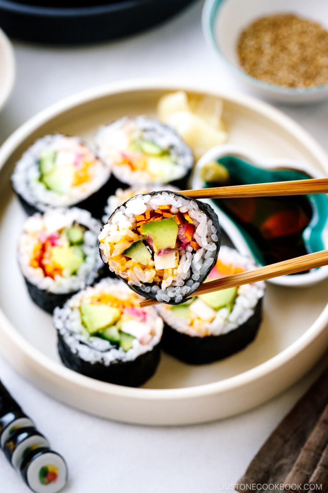

Back
Vegetarian Sushi

Description
Truthfully the vegetables are fairly interchangeable, just go with what you like. Also it's easy to add nori (seaweed) if you enjoy it.
Ingredients
- 1 ½ cups uncooked short-grain white rice
- 1 ½ cups water
- ⅓ cup red wine vinegar
- 2 teaspoons white sugar
- 1 teaspoon salt
- ½ avocado - peeled, pitted, and thinly sliced
- 1 teaspoon lemon juice
- ¼ cup sesame seeds, or as needed
- ½ cucumber - peeled, seeded, and cut into matchsticks
- ½ green bell pepper, seeded and cut into matchsticks
- ½ zucchini, cut into matchsticks
Directions
- Place rice and water in a saucepan over high heat, bring to a boil, and reduce heat to very low. Cover with a tight-fitting lid and simmer rice until water is absorbed, about 15 minutes. Remove rice from heat and allow to stand covered for 10 minutes.
- Mix red wine vinegar, sugar, and salt in a bowl until sugar has dissolved. Fluff rice with a fork and transfer into a large bowl; pour vinegar mixture into the rice and stir to coat rice. Spread rice out onto a large piece of parchment paper and fan the rice until cool. Cover rice with damp paper towels.
- Sprinkle avocado slices with lemon juice in a bowl.
- Spread a thin layer of sesame seeds onto a sushi mat. Pick up about half a cup of cooled rice and place onto sushi mat in an even layer. Place 1/4 of the cucumber, avocado slices, bell pepper, and zucchini in a line down the middle of the rice.
- Pick up the edge of the sushi mat, fold the bottom edge of the sheet up, enclosing the filling, and tightly roll the sushi into a thick cylinder. Once the sushi is rolled, wrap it in the mat and gently squeeze to compact it tightly. Repeat with remaining ingredients to made 4 rolls. Place rolls on a serving plate, slice into 6 or 8 pieces per roll, and cover with damp paper towels until serving time.
Nutrition Facts (per serving)
- Calories 385
- Fat 9g
- Carbs 70g
- Protein 8g